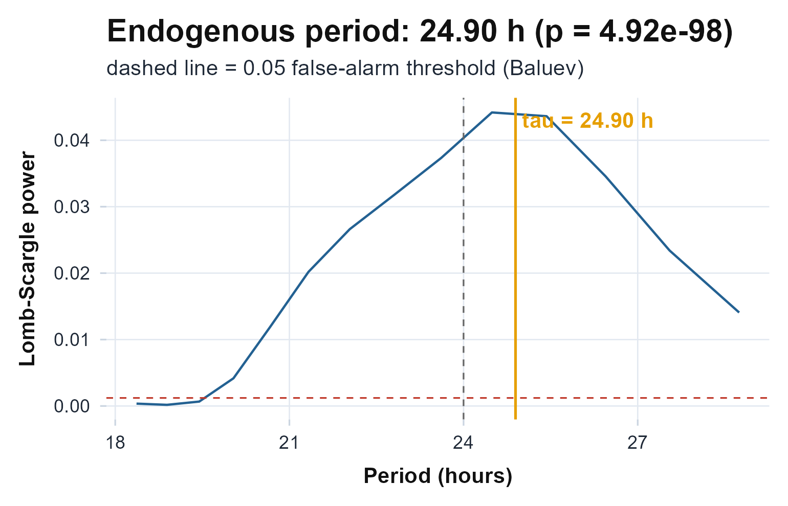
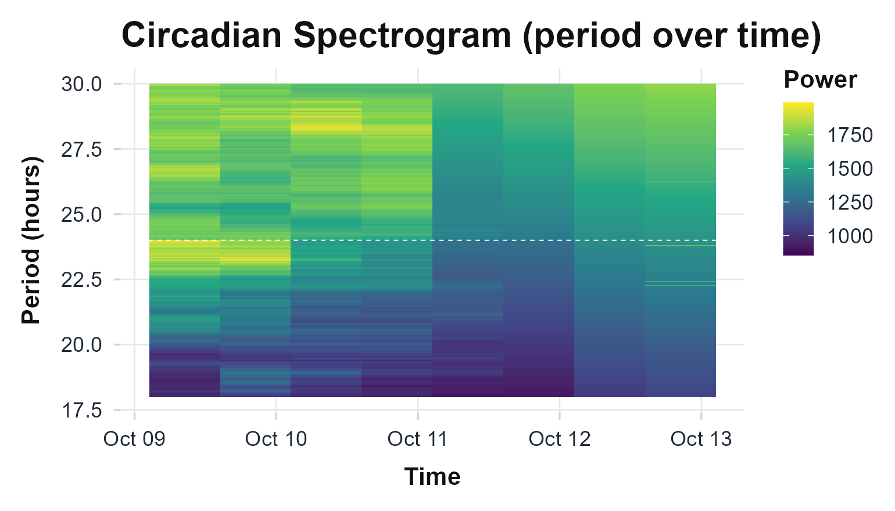

The idea, and a rule to remember
The cosinor assumes the period; period estimation finds it. Given a recording, these tools ask “what is the dominant cycle length?”, not “how well does a 24-hour cosine fit?” That matters whenever the rhythm may be free-running (a tau that is not exactly 24), as it is in jet lag, shift work, dim-light protocols, and many clinical and animal recordings. The two workhorses are the Lomb-Scargle periodogram, the least-squares spectral estimator for unevenly sampled series (Lomb, 1976; Scargle, 1982), and the chi-square (Sokolove-Bushell) periodogram, the analysis-of-variance method long standard in chronobiology (Sokolove & Bushell, 1978).
The rule to carry through this article: the chi-square periodogram needs near-regular sampling, while Lomb-Scargle tolerates gaps. Actigraphy is rarely gap-free (non-wear, dropped epochs, mixed epoch lengths), and a single device-off stretch can pull the chi-square peak off the true period while Lomb-Scargle, which works from the actual timestamps, stays on it. When in doubt with gappy data, trust Lomb-Scargle.
The math
Write the activity as values (mean-subtracted) sampled at times , , and let be the angular frequency of a trial period . The Lomb-Scargle power at is
where the time offset is fixed by . This offset is exactly what makes the estimate invariant to the irregular spacing of the : Lomb-Scargle is the least-squares fit of a sinusoid at each trial period. Standard-normalised this way, the power lies in , and its significance is read from the Baluev (2008) analytic false-alarm probability.
The chi-square periodogram instead folds the series at each integer trial period (in epochs) into phase bins over whole cycles and measures how much the phase means separate from the grand mean (Sokolove & Bushell, 1978):
Under the null of no rhythm at , , which supplies the significance line. The folding is where the regular-grid assumption enters: it treats the -th retained sample as if it sat at phase , so a gap that shifts later samples off their true phase distorts every .
Assumptions, and when they break
-
A long enough span. A period in the 18-30 h band
cannot be resolved from less than two days;
circadian.period()enforces a >= 2-day span and >= 10 valid points and returnsNArather than guessing. -
Stationarity. Both periodograms assume one period
holds across the recording. When tau drifts (re-entrainment,
fragmentation), a single global number hides it. Use
circadian.spectrogram()to see the period over time. - Regular sampling, for the chi-square periodogram only. Its phase-folding needs a near-uniform grid; gaps mis-align the fold. Lomb-Scargle carries the real times and is unbiased under irregular sampling, the centrepiece of this article.
-
A search window. The peak is taken within
[from, to](default 18-30 h). A rhythm outside the window cannot be found; widen it for ultradian or infradian work.
Recovering known truth
Before trusting these tools on real data, watch them recover a period we plant. We build a ten-day minute-level recording from a cosine whose period is 25 hours, not 24 (a deliberately free-running tau), then add noise.
ts <- seq(as.POSIXct("2024-01-01", tz = "UTC"), by = 60, length.out = 10 * 1440)
th <- as.numeric(difftime(ts, ts[1], units = "hours"))
set.seed(1)
tau_true <- 25
counts <- pmax(0, 100 + 80 * cos(2 * pi * (th - 8) / tau_true) + rnorm(length(th), 0, 15))
ls0 <- circadian.period(counts, ts)
chi0 <- chi.sq.periodogram(counts, ts)
knitr::kable(
data.frame(method = c("Lomb-Scargle", "chi-square"),
planted = c(tau_true, tau_true),
tau_h = c(ls0$tau, chi0$period)),
digits = 2, caption = "Both periodograms recover the planted 25-hour period."
)| method | planted | tau_h |
|---|---|---|
| Lomb-Scargle | 25 | 25.26 |
| chi-square | 25 | 25.05 |
Both land on 25, not the conventional 24: the method reports the
period we put in, not the one we expected. The confidence interval
should then bracket the planted value.
period.ci() attaches a circular moving-block bootstrap
interval that respects the autocorrelation of activity (Kunsch, 1989; Politis & Romano, 1992).
ci <- period.ci(counts, ts, n_boot = 200, seed = 1)
ci
#> Circadian Period with Bootstrap Confidence Interval
#>
#> tau: 25.038 h
#> 95% CI: [24.981, 25.015] h
#> SE: 0.009 h
#> Method: circular block residual bootstrap (200/200 valid reps)
tau_true >= ci$ci_lower && tau_true <= ci$ci_upper # the interval brackets the truth
#> [1] TRUEOn a real recording
The bundled recording runs the same way.
circadian.period() returns a list whose tau is
the estimated endogenous period and whose p_value is the
Baluev false-alarm probability.
agd <- agd.counts(read.agd(example_agd(1), verbose = FALSE))
ls <- circadian.period(agd$axis1, agd$timestamp)
c(tau = ls$tau, peak_power = ls$peak_power, p_value = ls$p_value,
n_used = ls$n_used, span_days = round(ls$span_days, 2))
#> tau peak_power p_value n_used span_days
#> 2.543077e+01 4.361705e-02 9.388299e-97 9.919000e+03 6.890000e+00
ls_df <- data.frame(period = ls$scanned, power = ls$power)
ggplot(ls_df, aes(period, power)) +
geom_line(colour = "grey60") +
geom_vline(xintercept = ls$tau, colour = "#236192", linewidth = 0.8) +
geom_vline(xintercept = 24, linetype = "dashed", colour = "grey40") +
labs(x = "Period (hours)", y = "Lomb-Scargle power") +
theme_actiRhythm()
The Lomb-Scargle periodogram of the bundled recording over the 18-30 h window. The vertical line marks the dominant period; the dashed line is the conventional 24 hours. The peak sits to the right of 24, a longer-than-day dominant cycle in this recording.
Reading the numbers
State each output in human terms:
- tau is the dominant period in hours. Near 24 is entrained to the day; clearly above or below 24 suggests a free-running or mis-entrained rhythm. Read it against the 24-hour line, not in isolation.
- peak_power (Lomb-Scargle) runs 0 to 1; higher is a sharper, more dominant cycle. Qp_peak (chi-square) is on a chi-square scale and is judged against its per-period critical line.
- p_value is the chance a peak this tall arose from noise. Lomb-Scargle uses the Baluev analytic false-alarm probability; the chi-square periodogram reports a family-wise (Sidak) p-value across the scanned periods, so a single tall bar is not called real purely from multiple testing.
- The confidence interval is the honest precision of tau. A wide interval that straddles 24 is the data telling you it cannot separate an entrained from a free-running rhythm.
When the sampling is gappy
This is the rule in action. We take the same planted-25 h series and knock out a contiguous block of epochs (a roughly two-day device-off gap), then re-estimate. Lomb-Scargle reads the real timestamps and should hold at 25; the chi-square fold, which assumes a regular grid, should slip.
gap <- th >= 5 * 24 & th < 7.3 * 24 # remove ~2.3 days in the middle
ts_g <- ts[!gap]
cnt_g <- counts[!gap]
ls_g <- circadian.period(cnt_g, ts_g)
chi_g <- chi.sq.periodogram(cnt_g, ts_g)
knitr::kable(
data.frame(method = c("Lomb-Scargle", "chi-square"),
truth = c(tau_true, tau_true),
full = c(ls0$tau, chi0$period),
gappy = c(ls_g$tau, chi_g$period)),
digits = 2,
caption = "After a multi-day gap, Lomb-Scargle stays on 25 h; the chi-square peak slips off."
)| method | truth | full | gappy |
|---|---|---|---|
| Lomb-Scargle | 25 | 25.26 | 25.26 |
| chi-square | 25 | 25.05 | 24.13 |
The chi-square period moves off 25 (pulled toward a wrong value because the samples after the gap no longer fold onto their true phase), while Lomb-Scargle, anchored to the actual times, returns essentially the same tau as before. The lesson is the rule: with gappy actigraphy, reach for Lomb-Scargle and treat a chi-square peak with suspicion until you have confirmed the sampling is near-regular.
The wider period family
The same spectral idea generates a family of tools that look past a single global number.
Period over time.
circadian.spectrogram() slides a window across the
recording and runs the chi-square periodogram in each, producing a
period-by-time heat map that shows drift, fragmentation, and
re-entrainment a single fit averages away.
sg <- circadian.spectrogram(agd$axis1, agd$timestamp, step_hours = 12)
sg$plot
Sliding-window chi-square spectrogram of the bundled recording. The dashed line is 24 h; bright bands show where power concentrates and how the dominant period wanders across the days.
Ultradian band power. Rhythms faster than a day (the
roughly 90-minute, 4-hour, and 8-hour bands) carry real physiology.
ultradian.bandpower() partitions the activity variance into
dyadic period bands with an undecimated Haar wavelet and reports the
fraction of variance in each (Percival & Walden, 2000).
ultradian.bandpower(agd$axis1, agd$timestamp)
#> Ultradian Wavelet Band Power
#>
#> band low_h high_h power fraction
#> 90min 1 2 186918.1 0.178
#> 4h 2 6 269890.2 0.257
#> 8h 6 12 122031.3 0.116What the cosinor leaves behind.
residual.spectrum() removes the fitted 24-hour cosinor mean
and estimates the spectrum of the residual, splitting it into ultradian
and high-frequency bands. Two recordings with the same 24-hour rhythm
but different residual fragmentation are told apart here.
residual.spectrum(agd$axis1, agd$timestamp, period = 24)
#> Residual Circadian Spectrum
#>
#> Residual variance: 1009357.4
#>
#> band low_h high_h power fraction
#> ultradian 2.0 8 995304256 0.197
#> high_freq 0.5 2 925775830 0.183Limitations
- Resolution scales with span. The period grid is set by the recording length; short records give coarse, wide intervals. Distinguishing 24.0 from 24.5 h needs many days.
- The chi-square periodogram is fragile to gaps. As shown above, treat its peak with care on irregular sampling; prefer Lomb-Scargle, or gate and report wear time first.
- Stationarity is assumed. A single tau hides a drifting period; use the spectrogram when re-entrainment or fragmentation is plausible.
-
The window bounds the answer. A rhythm outside
[from, to]is invisible; set the window to the science, not the default.
Reference and validation
The Lomb-Scargle estimator follows Lomb (1976) and Scargle
(1982), with the analytic
false-alarm probability of Baluev (2008) and the actigraphy application
of Ruf (1999);
the chi-square periodogram is that of Sokolove
& Bushell (1978). The period
confidence interval uses the moving-block bootstrap of Kunsch (1989) in
its circular form (Politis & Romano, 1992).
actiRhythm’s Lomb-Scargle power and the chi-square
statistic are cross-checked against the lomb and
zeitgebr/periodogram reference implementations
(to the printed precision) in the Validation article and the package’s test
suite.